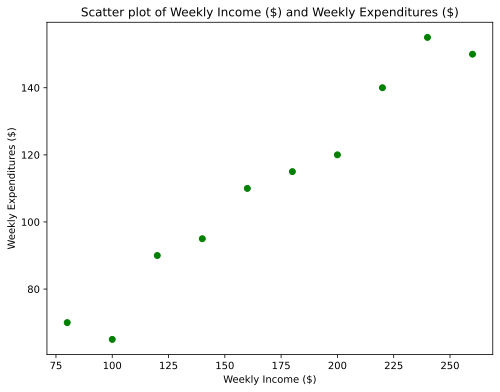
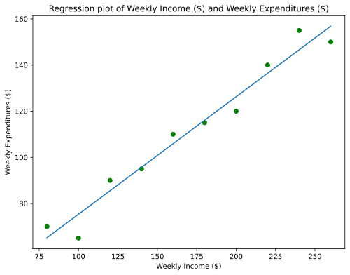
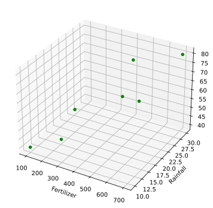
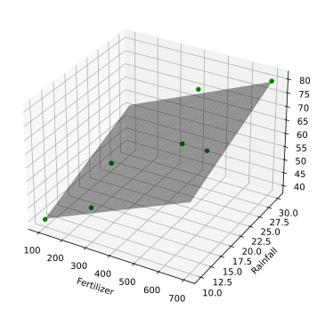
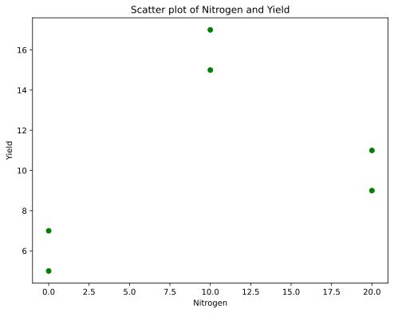
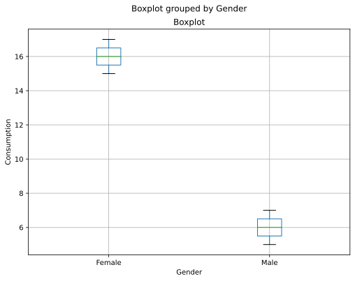
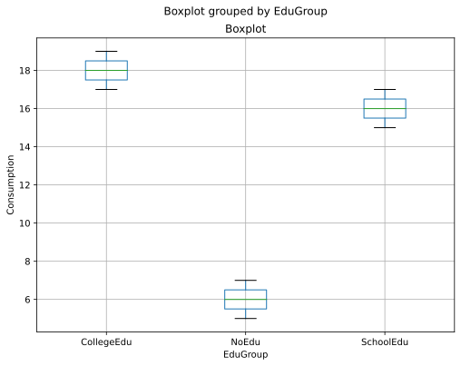
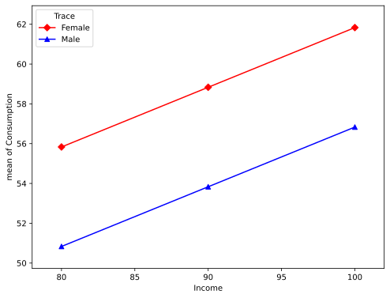
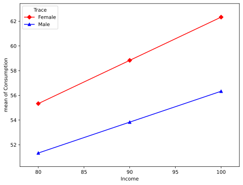

x = 5
x
# dir(x)5def slength1(s):
"""Returns a string describing the
length of the sequences"""
if len(s) > 10:
ans = 'very long'
else:
ans = 'normal'
return ans
help(slength1)
slength1("Hello")
slength1("HelloHello")
slength1("Hello again")
help(dir)
dir(slength1)
def slength2(s):
"""Returns a string describing the
length of the sequences into
empty, very long, normal and short"""
if len(s) == 0:
ans = 'empty'
elif len(s) > 10:
ans = 'very long'
elif len(s) > 7:
ans = 'normal'
else:
ans = 'short'
return ans
help(slength2)
slength2("")
slength2("Good Morning")
slength2("Greetings")
slength2("Hi")Help on function slength1 in module __main__:
slength1(s)
Returns a string describing the
length of the sequences
Help on built-in function dir in module builtins:
dir(...)
dir([object]) -> list of strings
If called without an argument, return the names in the current scope.
Else, return an alphabetized list of names comprising (some of) the attributes
of the given object, and of attributes reachable from it.
If the object supplies a method named __dir__, it will be used; otherwise
the default dir() logic is used and returns:
for a module object: the module's attributes.
for a class object: its attributes, and recursively the attributes
of its bases.
for any other object: its attributes, its class's attributes, and
recursively the attributes of its class's base classes.
Help on function slength2 in module __main__:
slength2(s)
Returns a string describing the
length of the sequences into
empty, very long, normal and short
'short'Income = [80, 100, 120, 140, 160, 180, 200, 220, 240, 260]
Expend = [70, 65, 90, 95, 110, 115, 120, 140, 155, 150]
import pandas as pd
# dir(pd)
# help(pd)
# help(pd.DataFrame)
# dir(pd.DataFrame)
df1 = pd.DataFrame(
{
"Income": Income
, "Expend": Expend
}
)
print(df1)
# dir(df1)
# df1.to_html()
# df1.to_latex()
# help(df1.kurt)
# df1.kurt()
# help(df1.kurtosis)
# df1.kurtosis()
# help(df1.mean)
# df1.mean() Income Expend
0 80 70
1 100 65
2 120 90
3 140 95
4 160 110
5 180 115
6 200 120
7 220 140
8 240 155
9 260 150from matplotlib import pyplot as plt
fig = plt.figure()
plt.scatter(
x = "Income"
, y = "Expend"
, color = "green"
, marker = "o"
, data = df1
)
plt.title("Scatter plot of Weekly Income (\$) and Weekly Expenditures (\$)")
plt.xlabel("Weekly Income (\$)")
plt.ylabel("Weekly Expenditures (\$)")
plt.show()
from statsmodels.formula.api import ols
from statsmodels.stats.anova import anova_lm
Reg1 = ols(formula = "Expend ~ Income", data = df1)
Fit1 = Reg1.fit()
print(Fit1.summary())
print(Fit1.params)
print(Fit1.fittedvalues)
print(Fit1.resid)
print(Fit1.bse)
print(Fit1.centered_tss)
print(anova_lm(Fit1)) OLS Regression Results
==============================================================================
Dep. Variable: Expend R-squared: 0.962
Model: OLS Adj. R-squared: 0.957
Method: Least Squares F-statistic: 202.9
Date: Thu, 13 Apr 2023 Prob (F-statistic): 5.75e-07
Time: 06:25:17 Log-Likelihood: -31.781
No. Observations: 10 AIC: 67.56
Df Residuals: 8 BIC: 68.17
Df Model: 1
Covariance Type: nonrobust
==============================================================================
coef std err t P>|t| [0.025 0.975]
------------------------------------------------------------------------------
Intercept 24.4545 6.414 3.813 0.005 9.664 39.245
Income 0.5091 0.036 14.243 0.000 0.427 0.592
==============================================================================
Omnibus: 1.060 Durbin-Watson: 2.680
Prob(Omnibus): 0.589 Jarque-Bera (JB): 0.777
Skew: -0.398 Prob(JB): 0.678
Kurtosis: 1.891 Cond. No. 561.
==============================================================================
Notes:
[1] Standard Errors assume that the covariance matrix of the errors is correctly specified.
Intercept 24.454545
Income 0.509091
dtype: float64
0 65.181818
1 75.363636
2 85.545455
3 95.727273
4 105.909091
5 116.090909
6 126.272727
7 136.454545
8 146.636364
9 156.818182
dtype: float64
0 4.818182
1 -10.363636
2 4.454545
3 -0.727273
4 4.090909
5 -1.090909
6 -6.272727
7 3.545455
8 8.363636
9 -6.818182
dtype: float64
Intercept 6.413817
Income 0.035743
dtype: float64
8890.0
df sum_sq mean_sq F PR(>F)
Income 1.0 8552.727273 8552.727273 202.867925 5.752746e-07
Residual 8.0 337.272727 42.159091 NaN NaNfig = plt.figure()
plt.scatter(
x = "Income"
, y = "Expend"
, color = "green"
, marker = "o"
, data = df1
)
plt.plot(df1["Income"], Fit1.fittedvalues)
plt.title("Regression plot of Weekly Income (\$) and Weekly Expenditures (\$)")
plt.xlabel("Weekly Income (\$)")
plt.ylabel("Weekly Expenditures (\$)")
plt.show()
import numpy as np
Fertilizer = np.arange(100, 800, 100)
Rainfall = [10, 20, 10, 30, 20, 20, 30]
Yield = [40, 50, 50, 70, 65, 65, 80]
import pandas as pd
df2 = pd.DataFrame(
{
"Fertilizer": Fertilizer
, "Rainfall": Rainfall
, "Yield": Yield
}
)
print(df2) Fertilizer Rainfall Yield
0 100 10 40
1 200 20 50
2 300 10 50
3 400 30 70
4 500 20 65
5 600 20 65
6 700 30 80from mpl_toolkits.mplot3d import Axes3D
from matplotlib import pyplot as plt
fig = plt.figure()
ax = fig.add_subplot(111, projection = "3d")
ax.scatter(
df2["Fertilizer"]
, df2["Rainfall"]
, df2["Yield"]
, color = "green"
, marker = "o"
, alpha = 1
)
ax.set_xlabel("Fertilizer")
ax.set_ylabel("Rainfall")
ax.set_zlabel("Yield")
plt.show()
from statsmodels.formula.api import ols
from statsmodels.stats.anova import anova_lm
Reg2 = ols(formula = "Yield ~ Fertilizer + Rainfall", data = df2)
Fit2 = Reg2.fit()
print(Fit2.summary())
print(Fit2.params)
print(Fit2.fittedvalues)
print(Fit2.resid)
print(Fit2.bse)
print(Fit2.centered_tss)
print(anova_lm(Fit2)) OLS Regression Results
==============================================================================
Dep. Variable: Yield R-squared: 0.981
Model: OLS Adj. R-squared: 0.972
Method: Least Squares F-statistic: 105.3
Date: Thu, 13 Apr 2023 Prob (F-statistic): 0.000347
Time: 06:25:17 Log-Likelihood: -13.848
No. Observations: 7 AIC: 33.70
Df Residuals: 4 BIC: 33.53
Df Model: 2
Covariance Type: nonrobust
==============================================================================
coef std err t P>|t| [0.025 0.975]
------------------------------------------------------------------------------
Intercept 28.0952 2.491 11.277 0.000 21.178 35.013
Fertilizer 0.0381 0.006 6.532 0.003 0.022 0.054
Rainfall 0.8333 0.154 5.401 0.006 0.405 1.262
==============================================================================
Omnibus: nan Durbin-Watson: 2.249
Prob(Omnibus): nan Jarque-Bera (JB): 0.705
Skew: -0.408 Prob(JB): 0.703
Kurtosis: 1.677 Cond. No. 1.28e+03
==============================================================================
Notes:
[1] Standard Errors assume that the covariance matrix of the errors is correctly specified.
[2] The condition number is large, 1.28e+03. This might indicate that there are
strong multicollinearity or other numerical problems.
Intercept 28.095238
Fertilizer 0.038095
Rainfall 0.833333
dtype: float64
0 40.238095
1 52.380952
2 47.857143
3 68.333333
4 63.809524
5 67.619048
6 79.761905
dtype: float64
0 -0.238095
1 -2.380952
2 2.142857
3 1.666667
4 1.190476
5 -2.619048
6 0.238095
dtype: float64
Intercept 2.491482
Fertilizer 0.005832
Rainfall 0.154303
dtype: float64
1150.0
df sum_sq mean_sq F PR(>F)
Fertilizer 1.0 972.321429 972.321429 181.500000 0.000176
Rainfall 1.0 156.250000 156.250000 29.166667 0.005690
Residual 4.0 21.428571 5.357143 NaN NaNfrom mpl_toolkits.mplot3d import Axes3D
from matplotlib import pyplot as plt
import numpy as np
import pandas as pd
from matplotlib import cm
fig = plt.figure()
ax = fig.add_subplot(111, projection = "3d")
ax.scatter(
df2["Fertilizer"]
, df2["Rainfall"]
, df2["Yield"]
, color = "green"
, marker = "o"
, alpha = 1
)
ax.set_xlabel("Fertilizer")
ax.set_ylabel("Rainfall")
ax.set_zlabel("Yield")
x_surf = np.arange(100, 720, 20)
y_surf = np.arange(10, 32, 2)
x_surf, y_surf = np.meshgrid(x_surf, y_surf)
exog = pd.core.frame.DataFrame({
"Fertilizer": x_surf.ravel()
, "Rainfall": y_surf.ravel()
})
out = Fit2.predict(exog = exog)
ax.plot_surface(
x_surf
, y_surf
, out.values.reshape(x_surf.shape)
, rstride=1
, cstride=1
, color="None"
, alpha = 0.4
)
plt.show()
Nitrogen = [0, 0, 10, 10, 20, 20]
Yield = [5, 7, 15, 17, 9, 11]
import pandas as pd
df3 = pd.DataFrame(
{
"Nitrogen": Nitrogen
, "Yield": Yield
}
)
print(df3) Nitrogen Yield
0 0 5
1 0 7
2 10 15
3 10 17
4 20 9
5 20 11from matplotlib import pyplot as plt
fig = plt.figure()
plt.scatter(
df3["Nitrogen"]
, df3["Yield"]
, color = "green"
, marker = "o"
)
plt.title("Scatter plot of Nitrogen and Yield")
plt.xlabel("Nitrogen")
plt.ylabel("Yield")
plt.show()
from statsmodels.formula.api import ols
from statsmodels.stats.anova import anova_lm
Reg3 = ols(formula = "Yield ~ Nitrogen + I(Nitrogen**2)", data = df3)
Fit3 = Reg3.fit()
print(Fit3.summary())
print(Fit3.params)
print(Fit3.fittedvalues)
print(Fit3.resid)
print(Fit3.bse)
print(Fit3.centered_tss)
print(anova_lm(Fit3)) OLS Regression Results
==============================================================================
Dep. Variable: Yield R-squared: 0.944
Model: OLS Adj. R-squared: 0.907
Method: Least Squares F-statistic: 25.33
Date: Thu, 13 Apr 2023 Prob (F-statistic): 0.0132
Time: 06:25:17 Log-Likelihood: -8.5136
No. Observations: 6 AIC: 23.03
Df Residuals: 3 BIC: 22.40
Df Model: 2
Covariance Type: nonrobust
====================================================================================
coef std err t P>|t| [0.025 0.975]
------------------------------------------------------------------------------------
Intercept 6.0000 1.000 6.000 0.009 2.818 9.182
Nitrogen 1.8000 0.255 7.060 0.006 0.989 2.611
I(Nitrogen ** 2) -0.0800 0.012 -6.532 0.007 -0.119 -0.041
==============================================================================
Omnibus: nan Durbin-Watson: 3.333
Prob(Omnibus): nan Jarque-Bera (JB): 1.000
Skew: 0.000 Prob(JB): 0.607
Kurtosis: 1.000 Cond. No. 418.
==============================================================================
Notes:
[1] Standard Errors assume that the covariance matrix of the errors is correctly specified.
Intercept 6.00
Nitrogen 1.80
I(Nitrogen ** 2) -0.08
dtype: float64
0 6.0
1 6.0
2 16.0
3 16.0
4 10.0
5 10.0
dtype: float64
0 -1.0
1 1.0
2 -1.0
3 1.0
4 -1.0
5 1.0
dtype: float64
Intercept 1.000000
Nitrogen 0.254951
I(Nitrogen ** 2) 0.012247
dtype: float64
107.33333333333334
df sum_sq mean_sq F PR(>F)
Nitrogen 1.0 16.000000 16.000000 8.000000 0.066276
I(Nitrogen ** 2) 1.0 85.333333 85.333333 42.666667 0.007292
Residual 3.0 6.000000 2.000000 NaN NaNConsumption = [5, 6, 7, 15, 16, 17]
Gender = ["Male", "Male","Male", "Female", "Female", "Female"]
import pandas as pd
df4 = pd.DataFrame(
{
"Consumption": Consumption
, "Gender": Gender
}
)
print(df4) Consumption Gender
0 5 Male
1 6 Male
2 7 Male
3 15 Female
4 16 Female
5 17 Femaleimport pandas as pd
fig = plt.figure()
df4.boxplot(
"Consumption"
, by = "Gender"
)
plt.title("Boxplot")
plt.xlabel("Gender")
plt.ylabel("Consumption")
plt.show()<Figure size 768x576 with 0 Axes>
from statsmodels.formula.api import ols
from statsmodels.stats.anova import anova_lm
fm4 = ols(formula = "Consumption ~ Gender", data = df4)
Fit4 = fm4.fit()
print(dir(Fit4))
print(Fit4.summary())
print(Fit4.params)
print(Fit4.centered_tss)
print(anova_lm(Fit4))['HC0_se', 'HC1_se', 'HC2_se', 'HC3_se', '_HCCM', '__class__', '__delattr__', '__dict__', '__dir__', '__doc__', '__eq__', '__format__', '__ge__', '__getattribute__', '__getstate__', '__gt__', '__hash__', '__init__', '__init_subclass__', '__le__', '__lt__', '__module__', '__ne__', '__new__', '__reduce__', '__reduce_ex__', '__repr__', '__setattr__', '__sizeof__', '__str__', '__subclasshook__', '__weakref__', '_abat_diagonal', '_cache', '_data_attr', '_data_in_cache', '_get_robustcov_results', '_is_nested', '_use_t', '_wexog_singular_values', 'aic', 'bic', 'bse', 'centered_tss', 'compare_f_test', 'compare_lm_test', 'compare_lr_test', 'condition_number', 'conf_int', 'conf_int_el', 'cov_HC0', 'cov_HC1', 'cov_HC2', 'cov_HC3', 'cov_kwds', 'cov_params', 'cov_type', 'df_model', 'df_resid', 'eigenvals', 'el_test', 'ess', 'f_pvalue', 'f_test', 'fittedvalues', 'fvalue', 'get_influence', 'get_prediction', 'get_robustcov_results', 'info_criteria', 'initialize', 'k_constant', 'llf', 'load', 'model', 'mse_model', 'mse_resid', 'mse_total', 'nobs', 'normalized_cov_params', 'outlier_test', 'params', 'predict', 'pvalues', 'remove_data', 'resid', 'resid_pearson', 'rsquared', 'rsquared_adj', 'save', 'scale', 'ssr', 'summary', 'summary2', 't_test', 't_test_pairwise', 'tvalues', 'uncentered_tss', 'use_t', 'wald_test', 'wald_test_terms', 'wresid']
OLS Regression Results
==============================================================================
Dep. Variable: Consumption R-squared: 0.974
Model: OLS Adj. R-squared: 0.968
Method: Least Squares F-statistic: 150.0
Date: Thu, 13 Apr 2023 Prob (F-statistic): 0.000255
Time: 06:25:17 Log-Likelihood: -7.2972
No. Observations: 6 AIC: 18.59
Df Residuals: 4 BIC: 18.18
Df Model: 1
Covariance Type: nonrobust
==================================================================================
coef std err t P>|t| [0.025 0.975]
----------------------------------------------------------------------------------
Intercept 16.0000 0.577 27.713 0.000 14.397 17.603
Gender[T.Male] -10.0000 0.816 -12.247 0.000 -12.267 -7.733
==============================================================================
Omnibus: nan Durbin-Watson: 2.000
Prob(Omnibus): nan Jarque-Bera (JB): 0.562
Skew: 0.000 Prob(JB): 0.755
Kurtosis: 1.500 Cond. No. 2.62
==============================================================================
Notes:
[1] Standard Errors assume that the covariance matrix of the errors is correctly specified.
Intercept 16.0
Gender[T.Male] -10.0
dtype: float64
154.0
df sum_sq mean_sq F PR(>F)
Gender 1.0 150.0 150.0 150.0 0.000255
Residual 4.0 4.0 1.0 NaN NaNConsumption = [5, 7, 15, 17, 17, 19]
EduGroup = ["NoEdu", "NoEdu", "SchoolEdu", "SchoolEdu", "CollegeEdu", "CollegeEdu"]
import pandas as pd
df5 = pd.DataFrame(
{
"Consumption": Consumption
, "EduGroup": EduGroup
}
)
print(df5) Consumption EduGroup
0 5 NoEdu
1 7 NoEdu
2 15 SchoolEdu
3 17 SchoolEdu
4 17 CollegeEdu
5 19 CollegeEdufig = plt.figure()
df5.boxplot(
"Consumption"
, by = "EduGroup"
)
plt.title("Boxplot")
plt.xlabel("EduGroup")
plt.ylabel("Consumption")
plt.show()<Figure size 768x576 with 0 Axes>
fm5 = ols(formula = "Consumption ~ EduGroup", data = df5)
Fit5 = fm5.fit()
print(Fit5.summary())
print(Fit5.params)
print(Fit5.centered_tss)
print(anova_lm(Fit5)) OLS Regression Results
==============================================================================
Dep. Variable: Consumption R-squared: 0.965
Model: OLS Adj. R-squared: 0.942
Method: Least Squares F-statistic: 41.33
Date: Thu, 13 Apr 2023 Prob (F-statistic): 0.00655
Time: 06:25:18 Log-Likelihood: -8.5136
No. Observations: 6 AIC: 23.03
Df Residuals: 3 BIC: 22.40
Df Model: 2
Covariance Type: nonrobust
=========================================================================================
coef std err t P>|t| [0.025 0.975]
-----------------------------------------------------------------------------------------
Intercept 18.0000 1.000 18.000 0.000 14.818 21.182
EduGroup[T.NoEdu] -12.0000 1.414 -8.485 0.003 -16.501 -7.499
EduGroup[T.SchoolEdu] -2.0000 1.414 -1.414 0.252 -6.501 2.501
==============================================================================
Omnibus: nan Durbin-Watson: 3.333
Prob(Omnibus): nan Jarque-Bera (JB): 1.000
Skew: -0.000 Prob(JB): 0.607
Kurtosis: 1.000 Cond. No. 3.73
==============================================================================
Notes:
[1] Standard Errors assume that the covariance matrix of the errors is correctly specified.
Intercept 18.0
EduGroup[T.NoEdu] -12.0
EduGroup[T.SchoolEdu] -2.0
dtype: float64
171.33333333333334
df sum_sq mean_sq F PR(>F)
EduGroup 2.0 165.333333 82.666667 41.333333 0.006553
Residual 3.0 6.000000 2.000000 NaN NaNConsumption = [51, 52, 53, 54, 56, 57, 55, 56, 58, 59, 62, 63]
Gender = ["Male", "Male", "Male", "Male", "Male", "Male", "Female", "Female", "Female", "Female", "Female", "Female"]
Income = [80, 80, 90, 90, 100, 100, 80, 80, 90, 90, 100, 100]
import pandas as pd
df6 = pd.DataFrame(
{
"Consumption": Consumption
, "Gender": Gender
, "Income": Income
}
)
print(df6) Consumption Gender Income
0 51 Male 80
1 52 Male 80
2 53 Male 90
3 54 Male 90
4 56 Male 100
5 57 Male 100
6 55 Female 80
7 56 Female 80
8 58 Female 90
9 59 Female 90
10 62 Female 100
11 63 Female 100from statsmodels.formula.api import ols
from statsmodels.stats.anova import anova_lm
Reg6 = ols(formula = "Consumption ~ Gender + Income", data = df6)
Fit6 = Reg6.fit()
print(Fit6.summary())
print(Fit6.params)
print(Fit6.fittedvalues)
print(Fit6.resid)
print(Fit6.bse)
print(Fit6.centered_tss)
print(anova_lm(Fit6)) OLS Regression Results
==============================================================================
Dep. Variable: Consumption R-squared: 0.963
Model: OLS Adj. R-squared: 0.955
Method: Least Squares F-statistic: 116.7
Date: Thu, 13 Apr 2023 Prob (F-statistic): 3.66e-07
Time: 06:25:18 Log-Likelihood: -12.525
No. Observations: 12 AIC: 31.05
Df Residuals: 9 BIC: 32.51
Df Model: 2
Covariance Type: nonrobust
==================================================================================
coef std err t P>|t| [0.025 0.975]
----------------------------------------------------------------------------------
Intercept 31.8333 2.546 12.505 0.000 26.075 37.592
Gender[T.Male] -5.0000 0.458 -10.914 0.000 -6.036 -3.964
Income 0.3000 0.028 10.694 0.000 0.237 0.363
==============================================================================
Omnibus: 0.407 Durbin-Watson: 2.294
Prob(Omnibus): 0.816 Jarque-Bera (JB): 0.503
Skew: 0.228 Prob(JB): 0.778
Kurtosis: 2.107 Cond. No. 1.00e+03
==============================================================================
Notes:
[1] Standard Errors assume that the covariance matrix of the errors is correctly specified.
[2] The condition number is large, 1e+03. This might indicate that there are
strong multicollinearity or other numerical problems.
Intercept 31.833333
Gender[T.Male] -5.000000
Income 0.300000
dtype: float64
0 50.833333
1 50.833333
2 53.833333
3 53.833333
4 56.833333
5 56.833333
6 55.833333
7 55.833333
8 58.833333
9 58.833333
10 61.833333
11 61.833333
dtype: float64
0 0.166667
1 1.166667
2 -0.833333
3 0.166667
4 -0.833333
5 0.166667
6 -0.833333
7 0.166667
8 -0.833333
9 0.166667
10 0.166667
11 1.166667
dtype: float64
Intercept 2.545572
Gender[T.Male] 0.458123
Income 0.028054
dtype: float64
152.66666666666669
df sum_sq mean_sq F PR(>F)
Gender 1.0 75.000000 75.00000 119.117647 0.000002
Income 1.0 72.000000 72.00000 114.352941 0.000002
Residual 9.0 5.666667 0.62963 NaN NaNimport matplotlib.pyplot as plt
from statsmodels.graphics.factorplots import interaction_plot
fig = plt.figure()
fig = interaction_plot(
x = Income
, trace = Gender
, response = Fit6.fittedvalues
, colors = ['red','blue']
, markers = ['D','^']
, xlabel ='Income'
, ylabel = 'Consumption'
)
plt.show()<Figure size 768x576 with 0 Axes>
from statsmodels.formula.api import ols
from statsmodels.stats.anova import anova_lm
Reg7 = ols(formula = "Consumption ~ Gender*Income", data = df6)
Fit7 = Reg7.fit()
print(Fit7.summary())
print(Fit7.params)
print(Fit7.fittedvalues)
print(Fit7.resid)
print(Fit7.bse)
print(Fit7.centered_tss)
print(anova_lm(Fit7)) OLS Regression Results
==============================================================================
Dep. Variable: Consumption R-squared: 0.976
Model: OLS Adj. R-squared: 0.967
Method: Least Squares F-statistic: 108.4
Date: Thu, 13 Apr 2023 Prob (F-statistic): 8.11e-07
Time: 06:25:18 Log-Likelihood: -9.9135
No. Observations: 12 AIC: 27.83
Df Residuals: 8 BIC: 29.77
Df Model: 3
Covariance Type: nonrobust
=========================================================================================
coef std err t P>|t| [0.025 0.975]
-----------------------------------------------------------------------------------------
Intercept 27.3333 3.059 8.935 0.000 20.279 34.387
Gender[T.Male] 4.0000 4.326 0.925 0.382 -5.976 13.976
Income 0.3500 0.034 10.340 0.000 0.272 0.428
Gender[T.Male]:Income -0.1000 0.048 -2.089 0.070 -0.210 0.010
==============================================================================
Omnibus: 2.522 Durbin-Watson: 3.273
Prob(Omnibus): 0.283 Jarque-Bera (JB): 0.970
Skew: -0.055 Prob(JB): 0.616
Kurtosis: 1.612 Cond. No. 2.62e+03
==============================================================================
Notes:
[1] Standard Errors assume that the covariance matrix of the errors is correctly specified.
[2] The condition number is large, 2.62e+03. This might indicate that there are
strong multicollinearity or other numerical problems.
Intercept 27.333333
Gender[T.Male] 4.000000
Income 0.350000
Gender[T.Male]:Income -0.100000
dtype: float64
0 51.333333
1 51.333333
2 53.833333
3 53.833333
4 56.333333
5 56.333333
6 55.333333
7 55.333333
8 58.833333
9 58.833333
10 62.333333
11 62.333333
dtype: float64
0 -0.333333
1 0.666667
2 -0.833333
3 0.166667
4 -0.333333
5 0.666667
6 -0.333333
7 0.666667
8 -0.833333
9 0.166667
10 -0.333333
11 0.666667
dtype: float64
Intercept 3.059026
Gender[T.Male] 4.326116
Income 0.033850
Gender[T.Male]:Income 0.047871
dtype: float64
152.66666666666669
df sum_sq mean_sq F PR(>F)
Gender 1.0 75.000000 75.000000 163.636364 0.000001
Income 1.0 72.000000 72.000000 157.090909 0.000002
Gender:Income 1.0 2.000000 2.000000 4.363636 0.070134
Residual 8.0 3.666667 0.458333 NaN NaNimport matplotlib.pyplot as plt
from statsmodels.graphics.factorplots import interaction_plot
fig = plt.figure()
fig = interaction_plot(
x = Income
, trace = Gender
, response = Fit7.fittedvalues
, colors = ['red','blue']
, markers = ['D','^']
, xlabel ='Income'
, ylabel = 'Consumption'
)
plt.show()<Figure size 768x576 with 0 Axes>